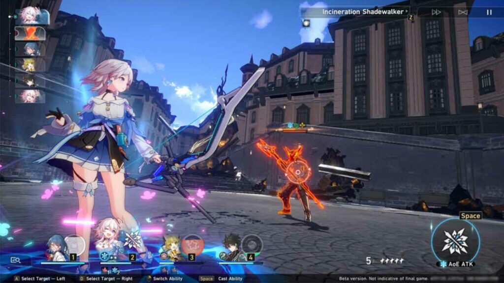
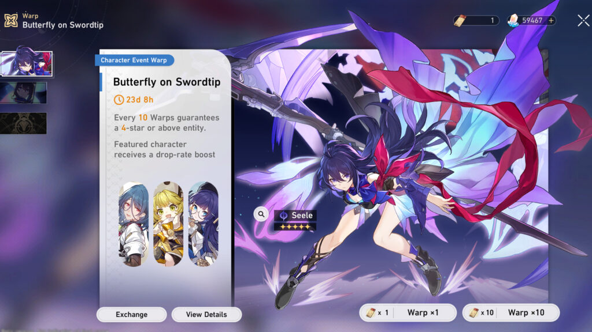
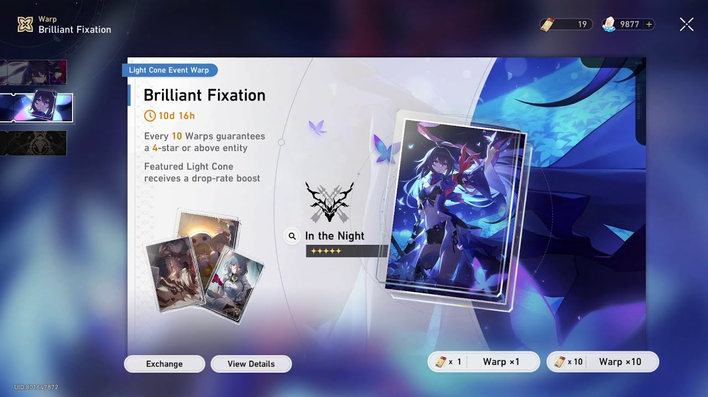
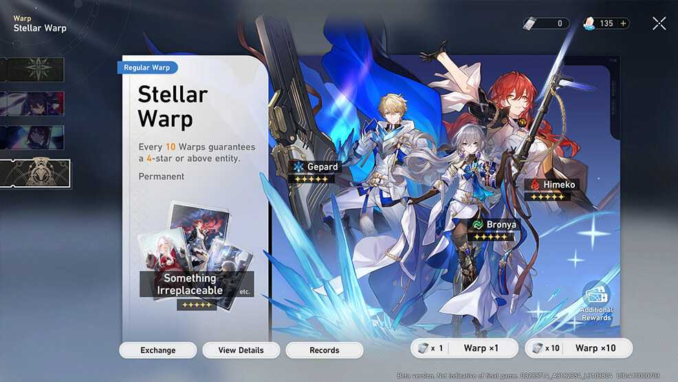
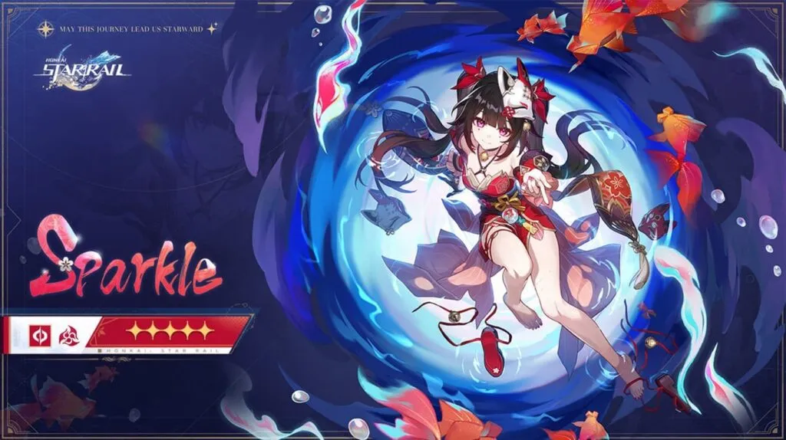
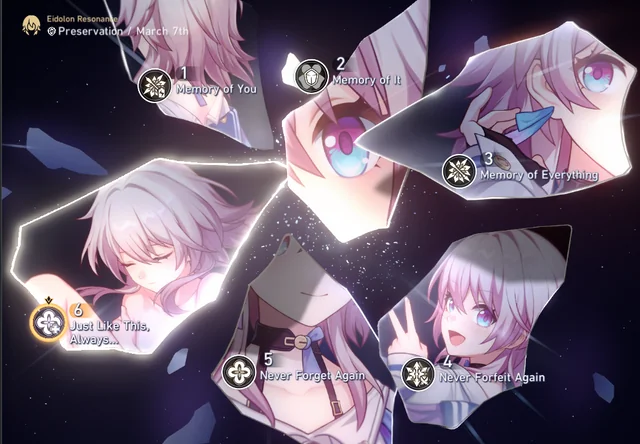
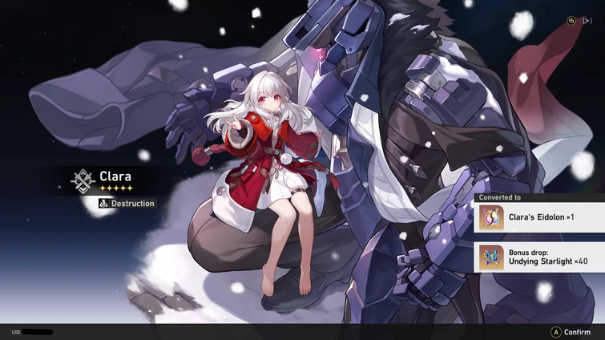
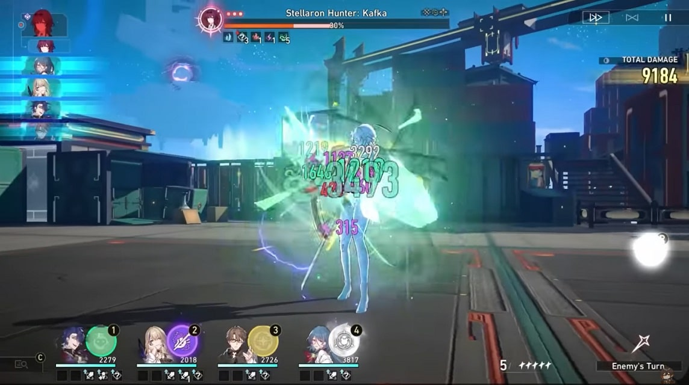

Honkai: Star Rail follows the gameplay style of classic Japanese
role-playing games: players build up a lineup of characters and control a
team of up to four in turn-based combat

Turn-based tactics (TBT) is a video game genre of strategy video games.
They are turn-based simulations of operational warfare and military
tactics in generally small-scale confrontations as opposed to more
strategic considerations of turn-based strategy (TBS) games. Turn-based
tactical gameplay is characterized by the expectation of players to
complete their tasks using only the combat forces provided to them in a
generally realistic (or at least believable) manner.
gacha
In Honkai Star Rail, the gacha character system is a central feature that allows players to acquire new characters for their teams through a randomized draw process. Here's an explanation of how the gacha character system works, along with the pity system and its primary function:
Event/Special pass Character Banner

Light cone banner

Normal Banner

Gacha Character System
Players use in-game currency or premium currency to participate in the gacha draw.
The draw typically results in the acquisition of characters, which can vary in rarity and power levels.
Characters may have different roles, abilities, and attributes, providing players with strategic options for team composition and battle tactics.
The gacha system often includes a pool of available characters, with some being more desirable or sought after by players due to their strength or popularity.
Pity System:
The pity system is a mechanic designed to increase player satisfaction and mitigate the randomness of the gacha draw.
It works by guaranteeing that players will receive a specific reward after a certain number of unsuccessful draws or pulls.
Typically, the pity system ensures that players will obtain a rare or high-value character if they haven't already received one within a predetermined number of draws.
The pity counter increases with each unsuccessful draw, gradually increasing the likelihood of receiving the guaranteed reward until it is triggered.
Primary Function:
The primary function of the pity system is to provide players with a safety net against unfavorable RNG (random number generation) outcomes.
It reduces frustration and discouragement that can arise from repeatedly failing to obtain desired characters through the gacha draw.
By offering a guaranteed reward after a set number of attempts, the pity system encourages player engagement and persistence.
Additionally, the pity system helps to maintain a sense of fairness and transparency in the gacha character acquisition process, promoting a more positive player experience overall.
Character

Characters in Honkai Star Rail serve as the core components of players' teams, each bringing unique abilities, skills, and attributes to battles. They play a crucial role in determining the effectiveness of strategies employed during gameplay. Players must carefully choose and assemble their characters to create synergistic teams capable of overcoming various challenges and adversaries encountered throughout the game. Additionally, characters contribu
te to the narrative depth and immersion of the game, enriching the player's experience as they journey through the vibrant and diverse universe of Honkai Star Rail, Honkai star rail's character can only be
To obtain characters in Honkai Star Rail, players typically utilize the gacha system, which involves spending in-game currency or premium currency to draw for new characters. Here's how players can acquire characters:
Lightcone
simply just a weapon that give you more stat and effect
eidolons
In Honkai Star Rail, Eidolons are powerful entities that players can summon to aid them in battles. These mystical beings possess unique abilities and strengths, providing players with strategic advantages during gameplay. Players can collect and unlock Eidolons through various in-game activities, enhancing their teams and expanding their tactical options. Eidolons add depth and diversity to the gameplay experience, allowing players to customize their strategies and overcome challenging opponents in the cosmic battles of Honkai Star Rail.
the way to unlock the eidolons is easy and money spending, the way is you just need to gacha and get the same character you want


Dot
What is DoT in Honkai: Star Rail? DoT is a pretty common abbreviation for “Damage over Time” in many different game genres. It describes status effects that deal damage to characters over a window of time, instead of once and immediately. Poison is the most common example of this in many video games

Action Priority: Speed determines the order in which
characters and enemies take their turns. Units with higher speed
stats act earlier in the turn order, allowing them to execute their
actions before slower opponents. This gives players an advantage by
enabling them to strategically plan their moves and potentially
disrupt enemy strategies.
Initiative Advantage: A faster unit gains the initiative by
being able to unleash their skills or attacks before the opponent
can react. This allows players to control the battlefield tempo,
applying pressure on the enemy team and gaining momentum in the
battle.
Positioning and Control: Speed influences a character's
ability to maneuver across the battlefield. Units with higher speed
can reposition themselves more frequently, allowing players to
control the flow of battle by adapting to changing circumstances and
exploiting enemy weaknesses.
Combo and Chain Attacks:Combo and Chain Attacks: Certain game
mechanics and character abilities in Honkai Star Rail are triggered
based on speed interactions. Faster units may initiate combo attacks
or chain abilities more effectively, leading to devastating
synergies and increased damage output.
Strategic Flexibility: Speed offers players strategic
flexibility by enabling them to dictate the pace of combat. Whether
it's securing crucial objectives, evading enemy assaults, or setting
up ambushes, units with higher speed provide players with greater
options for executing their tactical plans.
some character can buff other character , expecially asta that can buff speed stat